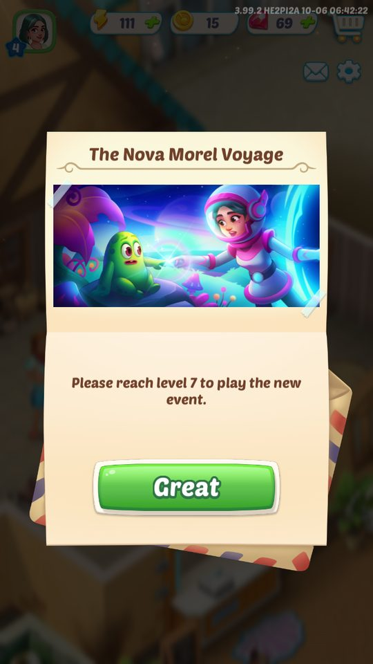
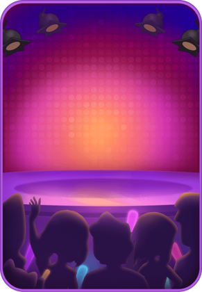
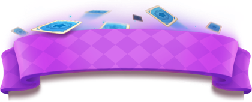
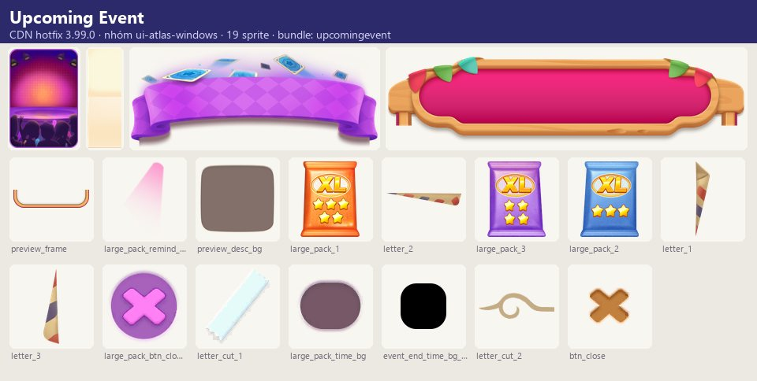
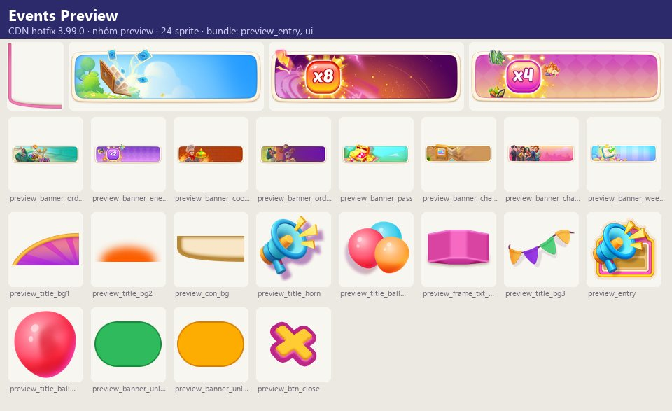
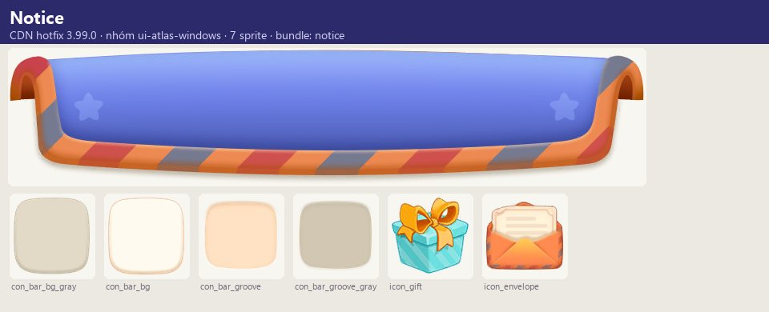
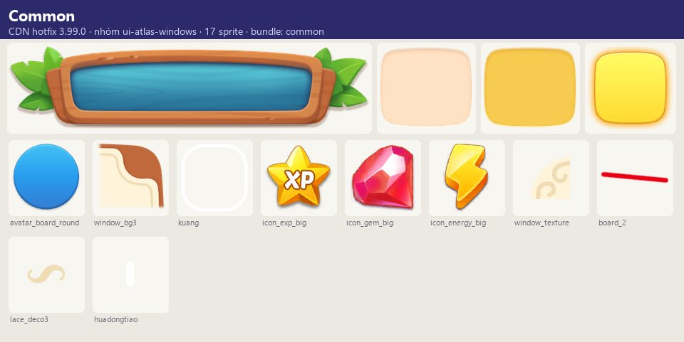
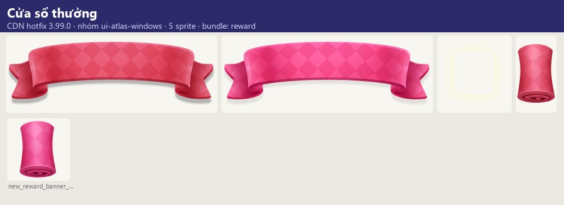
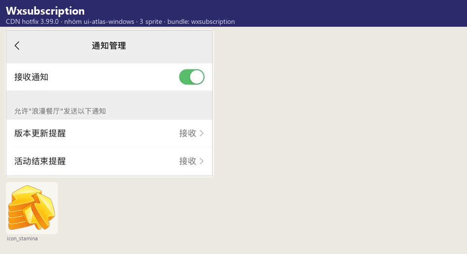

Ảnh chụp & tài nguyên
Mọi sự kiện LiveOps dùng chung một khung: lịch do server cấp (bảng activity), mục nhập trên bảng/HUD, đếm ngược trước khi bắt đầu ('Event starts in:'), cửa sổ…
Mô tả
- Mọi sự kiện LiveOps dùng chung một khung: lịch do server cấp (bảng activity), mục nhập trên bảng/HUD, đếm ngược trước khi bắt đầu ('Event starts in:'), cửa sổ giới thiệu luật ('How the Event Works'), tài nguyên sự kiện riêng (token/điểm/công cụ), cửa sổ thưởng chung (RewardWindow, ChestRewardWindowBase, RandomRewardWindow…), trả thưởng chưa nhận (RewardRecoverWindow), quy đổi tài nguyên thừa khi kết thúc và gia hạn trả phí (+2 ngày).
- Tài nguyên sự kiện được tải ngầm từ CDN ('[静默下载]', ví dụ NewWeeklyBundle 9.1MB, OrderBoost 2.5MB).
- Màn Events Preview liệt kê sự kiện sắp tới kèm cấp mở khóa.
Còn thiếu / chưa xác minh
Mở khóa & điểm vào
Mỗi sự kiện có cấp mở (preview_open_level 'Unlocks at Level {0}') và yêu cầu phiên bản app (mission_update_app_hint).
Điểm vào:
- BoardEntryIcon / HudActivityEntry
- PreviewActivityMainWindow (preview_entry 'Events')
- UpcomingEventWindow / UpcomingEventNewWindow
- NoticeWindow
Cách hoạt động
- Server gửi lịch sự kiện → client hiển thị UpcomingEvent (đếm ngược) → tải ngầm bundle (ResourceDownloadWindow/DownloadConfirmWindow khi cần) → 'New event ready!' → hướng dẫn chung (event_general_tutorial_start_*) → chơi.
- Sự kiện trang trí mẫu: hoàn thành Event Orders → Event Points → mua đồ trang trí sự kiện (picnic 13 món, thanksgiving, christmas, spring, wasteland, opera, alien…).
- Khi hết hạn: 'Event ended!' → hỏi gia hạn (+2 days, có hạn chót 'Offer expires in {0}') → điểm thừa quy đổi coin ('Your remaining Event Points have been converted into Coins').
- Thưởng hiển thị qua RewardWindow/NewRewardWindow/OneRewardWindow/RandomRewardWindow/ChestRewardWindowBase/ItemRewardDisplayWindow/GeneralRewardMsgWindow.
Luồng chi tiết theo code
Server gửi lịch sự kiện → client hiển thị UpcomingEvent (đếm ngược) → tải ngầm bundle (ResourceDownloadWindow/DownloadConfirmWindow khi cần) → 'New event ready!' → hướng dẫn chung (event_general_tutorial_start_*) → chơi. Sự kiện trang trí mẫu: hoàn thành Event Orders → Event Points → mua đồ trang trí sự kiện (picnic 13 món, thanksgiving, christmas, spring, wasteland, opera, alien…). Khi hết hạn: 'Event ended!' → hỏi gia hạn (+2 days, có hạn chót 'Offer expires in {0}') → điểm thừa quy đổi coin ('Your remaining Event Points have been converted into Coins'). Thưởng hiển thị qua RewardWindow/NewRewardWindow/OneRewardWindow/RandomRewardWindow/ChestRewardWindowBase/ItemRewardDisplayWindow/GeneralRewardMsgWindow.
Ảnh chụp & tài nguyên (10)
1 ảnh chụp trong game (BlueStacks/LDPlayer, tài khoản cấp 4); 3 ảnh tài nguyên trong APK; 6 bảng sprite trích từ bundle sự kiện trên CDN hotfix 3.99.0 (mỗi bảng là một chủ đề/biến thể; sprite rời, không phải màn hình đã dựng). Bấm ảnh để phóng to; nhãn UC dẫn tới use case tương ứng.



















Số liệu chính
| Chỉ số | Giá trị | Nguồn |
|---|---|---|
| Gia hạn | +2 days | Gia hạn — event_general_extend_add |
| CDN sự kiện | 170 nhóm Addressables, 2.068 bundle | CDN sự kiện — appendix/addressables-groups.md |
| Sự kiện đang chạy 06/10/2026 (6d 17h còn lại) | Yêu cầu cấp 7 | The Nova Morel Voyage — screens/manifest.json |
Use case (6)
Bấm vào từng use case để mở. Mở/đóng tất cả
UC-01 Báo trước sự kiện
Các bước- UpcomingEventNewWindow + đếm ngược
- Tải ngầm bundle
| Actor | System |
|---|---|
| Trigger | Lịch server |
| Điều kiện | Đủ cấp |
| Kết quả | Sự kiện sẵn sàng |
| Quy tắc / số liệu | Có biến thể báo album lớn / kết thúc |
| Evidence | prefab UpcomingEventWindow, UpcomingEventNewWindow*, text event_general_prediction_*; log [静默下载] |
UC-02 Xem trước sự kiện
Các bước- PreviewActivityMainWindow liệt kê
- Hiện 'Unlocks at Level {0}' / 'Event Started!'
| Actor | Player |
|---|---|
| Trigger | Bấm Events |
| Điều kiện | — |
| Kết quả | Biết sự kiện sắp mở |
| Quy tắc / số liệu | preview_title_*: orderboost, weeklyaq, checkin, characterIntimacy, orderboostpro, cookingfrenzy, pass, energy2/4/8, album |
| Evidence | text preview_*; prefab PreviewActivity/* |
UC-03 Sự kiện trang trí
Các bước- Event Orders → Event Points
- Mua đồ trang trí
- Play
| Actor | Player |
|---|---|
| Trigger | Sự kiện decor |
| Điều kiện | — |
| Kết quả | Không gian sự kiện được trang trí |
| Quy tắc / số liệu | — |
| Evidence | text event_general_note_*, event_*_decoration_* |
UC-04 Gia hạn
Các bước- 'Want to extend the event?'
- Extend (+2 days) / No, thanks
| Actor | Player |
|---|---|
| Trigger | Hết hạn |
| Điều kiện | Ưu đãi gia hạn còn |
| Kết quả | Thêm 2 ngày |
| Quy tắc / số liệu | Hạn chót ưu đãi |
| Evidence | text event_general_extend_*, mdnew_endbuy_* |
UC-05 Quy đổi khi kết thúc
Các bước- Quy đổi điểm/công cụ thừa
| Actor | System |
|---|---|
| Trigger | Sự kiện đóng |
| Điều kiện | Còn tài nguyên |
| Kết quả | Coin/thưởng |
| Quy tắc / số liệu | — |
| Evidence | text event_general_points_reclaim_desc, *_convert_desc |
Cấu hình (3)
Gộp mọi nguồn: const trong code, JSON mặc định trong Resources, bảng static, storage key, AB test, cờ server.
| Nguồn | Key | Kiểu | Giá trị | Ý nghĩa | Nơi định nghĩa |
|---|---|---|---|---|---|
| asset | Gia hạn | string | +2 days | event_general_extend_add | |
| asset | CDN sự kiện | bundle | 170 nhóm Addressables, 2.068 bundle | appendix/addressables-groups.md | |
| runtime (ảnh chụp BlueStacks 06/10/2026) | The Nova Morel Voyage | Yêu cầu cấp 7 | Sự kiện đang chạy 06/10/2026 (6d 17h còn lại) | screens/manifest.json |
Backend / server
| Command | Chiều | Mục đích |
|---|---|---|
Lịch/trạng thái sự kiện | server→client | Bảng activity (CSDL) |
Giao diện (UI)
| Element | Class | Mục đích |
|---|---|---|
| Thưởng | Prefabs/Window/Reward/* | |
| Sắp tới | Prefabs/Window/Upcoming/* |
Storage keys
activity
Chưa đọc được / ghi chú
- Lịch, cấu hình và thưởng sự kiện do server cấp
Tính năng liên quan
Sự kiện khám phá bản đồ Sự kiện bảng merge phụ Sự kiện đua & xếp hạng Sự kiện đào & phá Sự kiện hợp tác & mời bạn Sự kiện tăng tốc đơn & máy tạo Sự kiện mini-game Hạ tầng: tải, hotfix, mạng, Lua
Nguồn đã đọc
- notes/packs/EventFramework.md
- appendix/runtime.md
- screens/manifest.json (ảnh chụp)